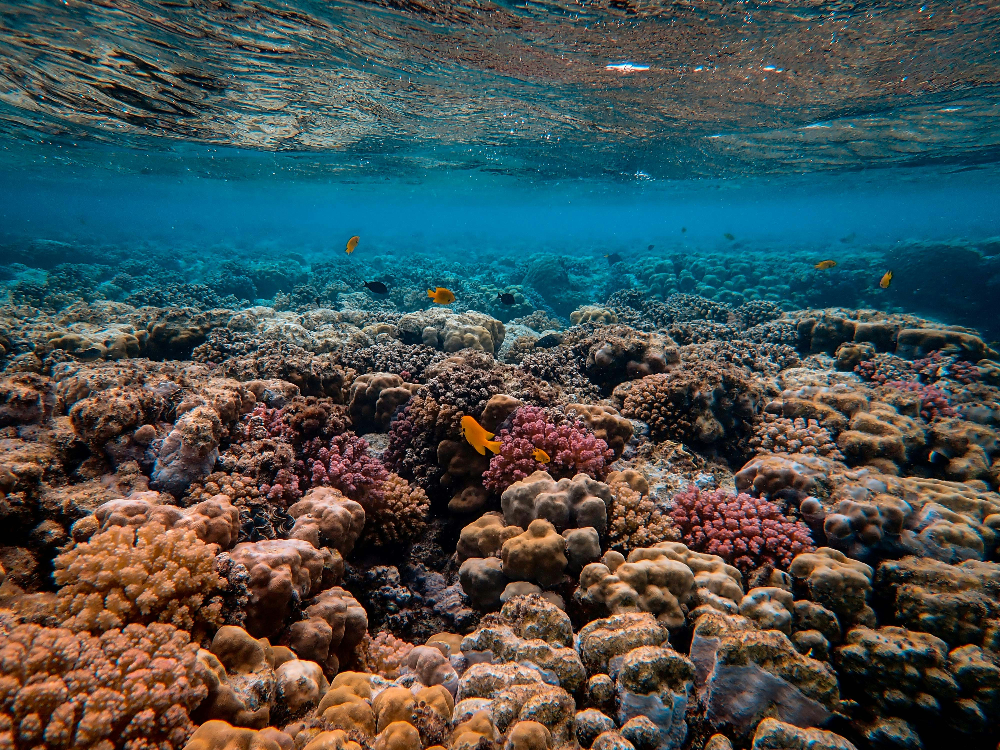
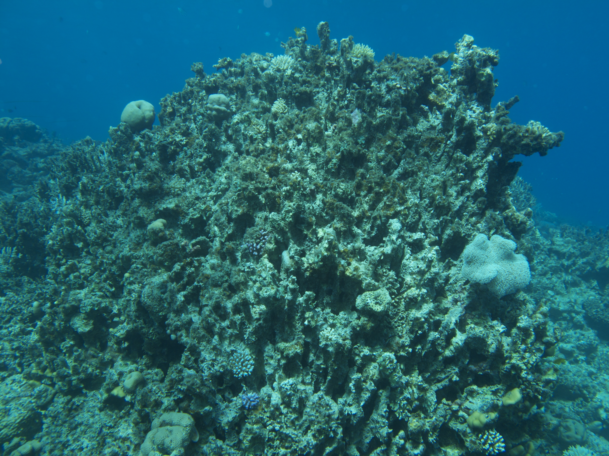

Research Statement
Our primary research idea is to model how microplastic accumulation over time influences coral growth and reef health. We aim to quantitatively determine how the buildup of microplastics affects recovery rates and long term sustainability within our oceans. This will be achieved using differential equations to describe the interaction between pollutant load and the subsequent biological response. By modeling the accumulation of microplastics around coral reefs and the subsequent rate of growth (or lack thereof) of the coral system, we can use statistical predictions and modeling techniques to predict the equilibrium, resilience, and collapse threshold of the coral ecosystem with regards to microplastic pollution.
By observing data in the data set collected by the National Center for Environmental Information [1], which includes a detailed interactive map and other data set variances surrounding marine microplastic concentrations at different depths and levels throughout the world, we can approximate pollution input rates and degradation constants. These data will help us determine our parameters for a coupled differential equation system so that we can model microplastic dynamics and coral reef population.
One limitation of our model that we found early on is that we cannot model the entire ocean while maintaining reasonably sized data sets. Thus, we decided to focus on the reefs surrounding Australia (the Great Barrier Reef, Ningaloo Reef, and Montgomery Reef) to perform our modeling. To do so, we will be relying on data collected by the Australian Institute of Marine Science [2], which includes detailed quantitative values representing reef size and health. However, since we will be limiting the scope of our project to a certain geographic region, our model will not be reliable for wider studies such as certain oceans or coral reefs located near other landmasses.
Our project will center around a python-based analysis of a system of differential equations extrapolated from the data sets outlined above. We will also utilize prior research to determine the carrying capacity of the reefs and model how deterministic interactions between microplastic accumulation and coral biomass evolve over time. We will implement this model using python’s scipy.integrate.solve, and we will visualize coral-pollutant interactions with matplot.lib. Our simulation results will demonstrate the critical thresholds surrounding coral reef collapse and microplastic levels.
Intellectual Merit
The objective of this project is to analyze the impact of microplastic pollution on Australian coral reef growth through analysis techniques introduced in BIOL300 and BIOL301. These techniques include statistical analysis, data analysis, and couple-differential equation models that resemble predator-prey models. Using these techniques, we will be able to find the rate constant of microplastic accumulation and coral reef capacity. Differential equations can also be used to explore the long-term, deterministic trends beyond random simulation, couple pollution and biological processes to further study equilibrium, resilience, and collapse thresholds.
The goal is to employ a quantitative analysis that elucidates the impact of microplastics on the Australian coral reef ecosystem. Data and findings from this analysis have the potential to aid in educating the public on the pressing issue of microplastic pollution, streamlining the implementation of strategies to reduce current pollution threats.
Broader Impacts
The data analyzed and curated throughout this investigation are currently relevant and will continue to grow in relevancy in the near and distant future. Fish from these coral reefs are relied on by millions of people worldwide as a primary source of food [3]. The reef’s structures serve as diverse habitats for thousands of different fish, allowing for them to thrive and continue to escalate their populations. However, marine microplastic pollution serves as a major factor in the death of many coral and thus the depletion of fish populations. Australia serves as our principal reference point for microplastic pollution in the waters, specifically in the region of the Great Barrier Reef. As of June 2025, around 86% of the marine debris found around the reef was that of microplastics and a three year study has determined microplastic to be a chronic risk for marine organisms [4]. While the Great Barrier Reef is being affected by global warming and reef bleaching as well, the prevalence of microplastics and its growing threat is clear evidence of the necessity to reduce, reuse, and recycle. Education on the topic is everywhere, from social media to global news centers, however more education and further measures need to be taken to reduce the amount of microplastics flowing into the ocean from humans before the current pollution problem can truly be addressed.

